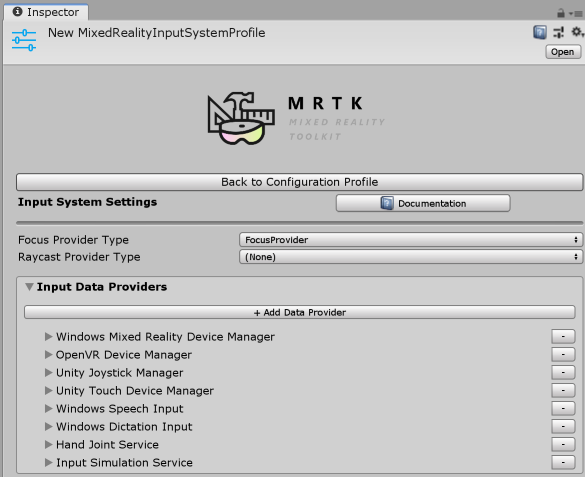

系统，扩展服务和数据提供者
在混合现实工具包中，许多功能以服务形式提供。服务分为三大类：系统，扩展服务和数据提供者(systems, extension services and data providers.)。
Systems (系统)
系统是提供混合现实工具包核心功能的服务。所有系统都实现了
IMixedRealityService 接口.
列出的每个系统都出现在MixedRealityToolkit组件的配置文件中。
Extensions (扩展)
扩展服务是扩展“混合现实工具包”功能的组件。所有扩展服务都实现了 IMixedRealityExtensionService 接口。
有关创建扩展服务的信息，请参考扩展服务 article.
为了使MRTK可以访问，扩展服务是使用MixedRealityToolkit组件的配置文件的“Extensions”部分进行注册和配置的。
Data Providers (数据提供者)
数据提供者是向“混合现实工具包”服务提供数据的组件。所有数据提供者都实现了 IMixedRealityDataProvider 接口。
[!注意] 并非所有服务都需要数据提供者。在MixedRealityToolkit的系统中，输入和空间感知系统是唯一利用数据提供者的服务。
为了使特定MRTK服务可以访问，数据提供者已在服务的配置文件中注册。
应用程序代码通过IMixedRealityDataProviderAccess 接口访问数据提供者。
[!重要] 尽管
ImixedRealityDataProvider继承自ImixedRealityService，但数据提供者未在MixedRealityServiceRegistry中注册。要访问数据提供者，应用程序代码必须查询它们注册的服务实例（例如：输入系统）。
Input (输入)
MRTK输入系统仅使用实现IMixedRealityInputDeviceManager接口的数据提供者。

下面的示例演示如何访问输入模拟提供者（input simulation provider）并切换SmoothEyeTracking属性。
if (CoreServices.InputSystem != null)
{
IMixedRealityDataProviderAccess dataProviderAccess = CoreServices.InputSystem as IMixedRealityDataProviderAccess;
if (dataProviderAccess != null)
{
IInputSimulationService inputSimulation =
dataProviderAccess.GetDataProvider<IInputSimulationService>();
if (inputSimulation != null)
{
inputSimulation.SmoothEyeTracking = !inputSimulation.SmoothEyeTracking;
}
}
}
[!注意] 输入系统仅返回运行该应用程序的平台所支持的数据提供者。
有关为MRTK输入系统编写数据提供者的信息，请参见创建输入系统数据提供者.
Spatial Awareness (空间感知)
MRTK空间感知系统仅使用实现 IMixedRealitySpatialAwarenessObserver 接口的数据提供者。

以下示例演示如何访问已注册的空间网格数据提供者（spatial mesh data providers）并更改网格的可见性。
if (CoreServices.SpatialAwarenessSystem != null)
{
IMixedRealityDataProviderAccess dataProviderAccess =
CoreServices.SpatialAwarenessSystem as IMixedRealityDataProviderAccess;
if (dataProviderAccess != null)
{
IReadOnlyList<IMixedRealitySpatialAwarenessMeshObserver> observers =
dataProviderAccess.GetDataProviders<IMixedRealitySpatialAwarenessMeshObserver>();
foreach (IMixedRealitySpatialAwarenessMeshObserver observer in observers)
{
// 设置网格以使用遮挡材质
observer.DisplayOption = SpatialMeshDisplayOptions.Occlusion;
}
}
}
[!注意] 空间感知系统仅返回运行该应用程序的平台所支持的数据提供者。
有关编写MRTK空间感知系统数据提供者的信息，请参见创建空间感知系统数据提供者.